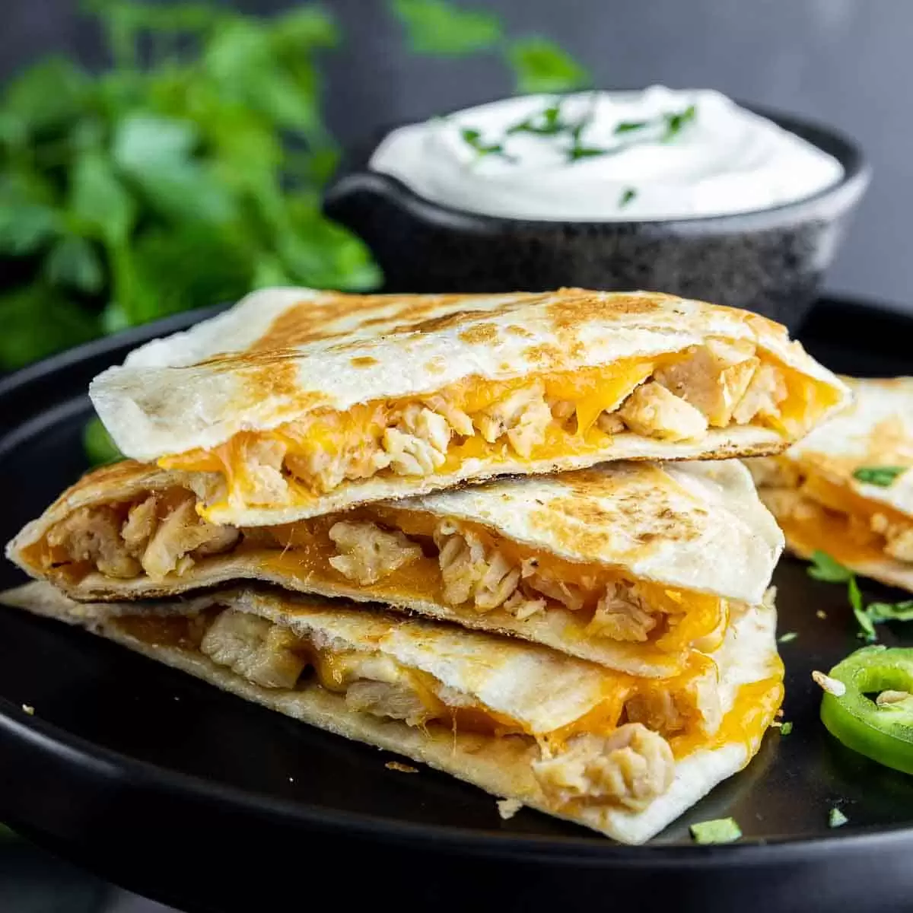

Chicken Quesadilla

Description
A chicken quesadilla is a savory and satisfying Mexican-inspired dish that consists of tender pieces of chicken and various complementary ingredients folded inside a tortilla.
The tortilla is typically pan-fried or grilled until it's crispy and golden, encasing the flavorful filling. The chicken is often seasoned and cooked to perfection, and it's combined with ingredients like cheese, onions, bell peppers, and sometimes salsa or other condiments.
The result is a delicious fusion of flavors and textures, with the tortilla providing a crispy contrast to the gooey, melted cheese and the well-seasoned chicken.
Chicken quesadillas are often served with sour cream, guacamole, or additional salsa on the side, making them a versatile and customizable dish that can be enjoyed as a snack, appetizer, or main course.
Ingredients
- Chicken breast or chicken tenders
- Flour tortillas
- Shredded cheese (common choices include cheddar, Monterey Jack, or Mexican blend)
- Onion (optional)
- Bell peppers (optional)
- Salsa (optional)
- Sour cream (for serving, optional)
- Guacamole (for serving, optional)
- Olive oil or cooking spray (for cooking the quesadillas)
- Seasonings for the chicken, such as cumin, chili powder, salt, and pepper (optional)
Steps
-
Prepare The Chicken
- Season the chicken with your choice of seasonings, such as cumin, chili powder, salt, and pepper.
-
Cook the seasoned chicken until it's fully cooked and no longer pink inside.
This can be done by grilling, pan-frying, or baking. Once cooked, slice the chicken into thin strips or small pieces.
-
Prepare The Filling (Optional)
-
If you choose to use onion and bell peppers in your quesadilla, sauté them in a pan until they are tender and slightly caramelized.
Set them aside.
-
Assemble The Quesadilla
- Lay a flour tortilla flat on a clean surface.
- Sprinkle a portion of shredded cheese evenly over half of the tortilla.
- Place a portion of the cooked chicken (and sautéed onions and bell peppers if using) on top of the cheese.
- If desired, add a spoonful of salsa on top of the chicken.
-
Fold And Cook
- Fold the other half of the tortilla over the filling to create a half-moon shape.
- Heat a skillet or griddle over medium heat and lightly grease it with olive oil or cooking spray.
-
Carefully transfer the assembled quesadilla to the skillet and cook until the tortilla becomes golden brown
and crispy, usually about 2-3 minutes per side.
-
Serve
- Remove the quesadilla from the skillet and let it cool for a minute.
- Use a sharp knife to cut the quesadilla into wedges or halves.
- Serve the chicken quesadilla hot, optionally with sour cream and guacamole on the side.